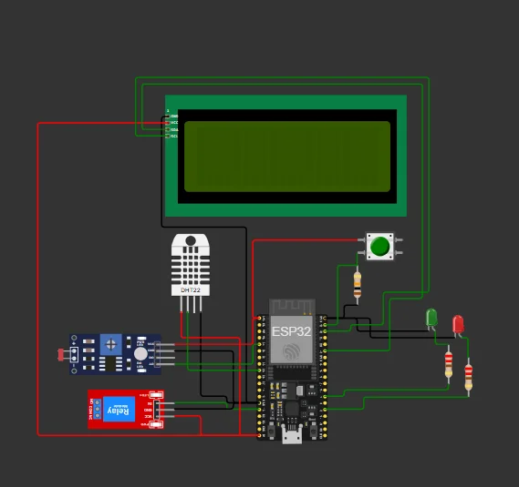
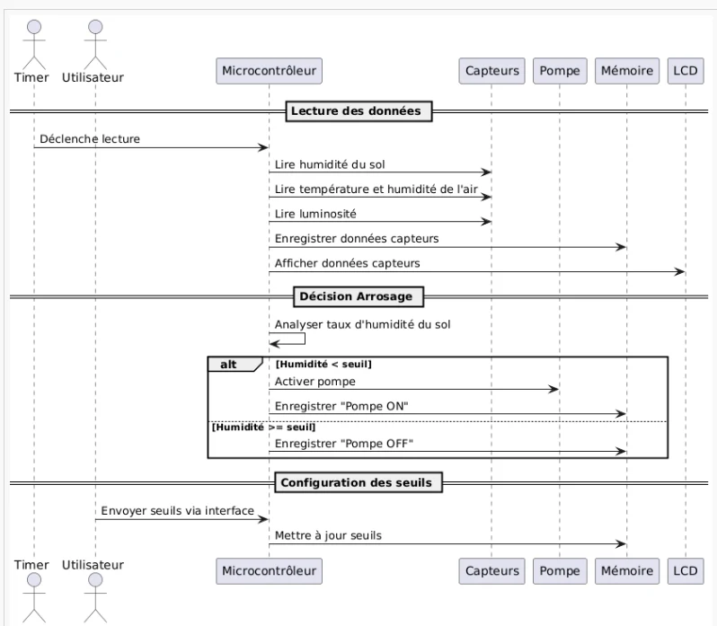
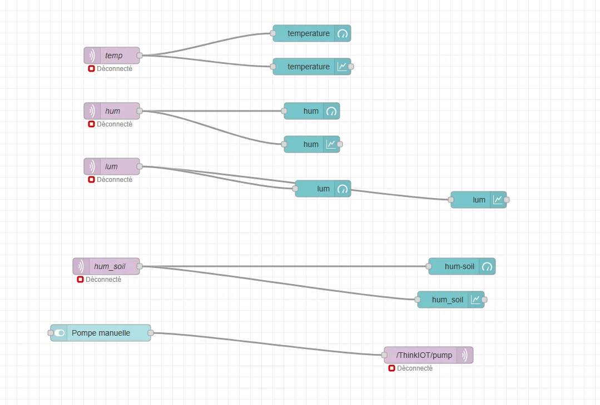
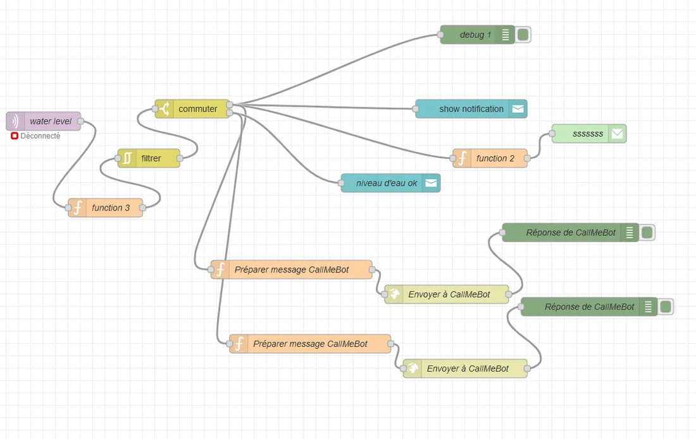
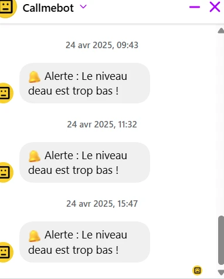

Système d'arrosage automatique connecté
Connected automatic irrigation system
Un ESP32 mesure l'humidité du sol et déclenche la pompe seulement quand la plante en a besoin. Les mesures partent en MQTT vers un tableau de bord Node-RED, qui alerte quand le réservoir est vide.
An ESP32 measures soil moisture and runs the pump only when the plant needs it. Measurements go over MQTT to a Node-RED dashboard, which raises an alert when the tank is empty.
Arroser sans gaspillerWatering without waste
Un arrosage programmé à heure fixe arrose même quand le sol est déjà humide. L'objectif est d'adapter l'arrosage au besoin réel de la plante pour économiser l'eau.
Watering on a fixed schedule waters even when the soil is already moist. The goal is to match watering to the plant's real need in order to save water.
Mesurer, décider, prévenirMeasure, decide, notify
- Arrosage automatique selon l'humidité du sol.
- Suivi à distance sur un tableau de bord et commande manuelle de la pompe.
- Affichage local sur écran LCD.
- Alerte par messagerie et par e-mail quand le niveau d'eau est trop bas.
- Automatic watering based on soil moisture.
- Remote monitoring on a dashboard and manual pump control.
- Local display on an LCD screen.
- Chat and e-mail alert when the water level is too low.
Matériel et câblageHardware and wiring
| ComposantComponent | BrochePin | RôleRole |
|---|---|---|
| Capteur d'humidité du solSoil moisture sensor | GPIO 33 | Lecture analogiqueAnalog reading |
| DHT11 | GPIO 25 | Température et humidité de l'airAir temperature and humidity |
| PhotorésistancePhotoresistor | GPIO 34 | LuminositéLight level |
| Capteur de niveau d'eauWater level sensor | GPIO 35 | Niveau du réservoirTank level |
| Relais + pompeRelay + pump | GPIO 13 | Commande de l'arrosageWatering control |
| LED rouge / verteRed / green LED | GPIO 2 / 4 | État de la pompePump status |
| BoutonButton | GPIO 23 | Entrée localeLocal input |
| LCD 16×2 | I2C 0x27 | Affichage localLocal display |

Ce que fait l'ESP32What the ESP32 does
- Lit les cinq mesures : humidité du sol, température, humidité de l'air, luminosité, niveau d'eau.
- Démarre la pompe quand le sol passe sous le seuil calibré, puis l'arrête quand il est assez humide.
- Publie les mesures en MQTT toutes les 2 secondes et écoute un topic de commande.
- Une commande manuelle force la pompe ; le système revient seul en mode automatique après 2 minutes.
- Affiche les valeurs et l'état de la pompe sur l'écran LCD.
- Reads the five measurements: soil moisture, temperature, air humidity, light level, water level.
- Starts the pump when the soil drops below the calibrated threshold, then stops it once it is moist enough.
- Publishes measurements over MQTT every 2 seconds and listens on a command topic.
- A manual command forces the pump; the system returns to automatic mode by itself after 2 minutes.
- Shows the values and the pump state on the LCD.
| Problème rencontréProblem met | SolutionFix |
|---|---|
| Connexion Wi-Fi instableUnstable Wi-Fi connection | Adresse IP statique pour l'ESP32Static IP address for the ESP32 |
| Lectures DHT11 invalides (NaN)Invalid DHT11 readings (NaN) | Relecture automatiqueAutomatic re-read |
| Capteur de sol peu précisImprecise soil sensor | Recalibrage en conditions réellesRecalibration in real conditions |
| Tableau de bord lentSlow dashboard | Publication limitée à une fois toutes les 2 sPublishing limited to once every 2 s |

Node-RED : tableau de bord et alertesNode-RED: dashboard and alerts



Pistes d'améliorationNext steps
- Modules LoRa pour étendre la portée de communication.
- Application mobile dédiée au suivi et au contrôle.
- LoRa modules to extend the communication range.
- A dedicated mobile app for monitoring and control.
Faites sécher le solLet the soil dry out
La démo reproduit la logique d'arrosage, l'écran LCD et les messages MQTT dans votre navigateur.
The demo reproduces the watering logic, the LCD and the MQTT messages in your browser.